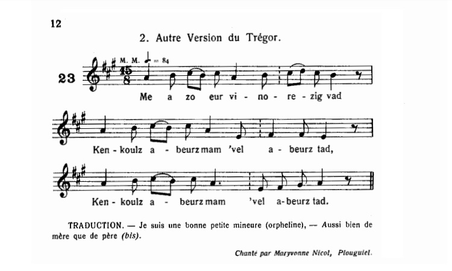

Ar vinorez
La mineure (l'orpheline)
The orphan girl
Chant collecté par Théodore Hersart de La Villemarqué
dans le 2ème Carnet de Keransquer (p. 125).

Mélodie: "Ar Vinorezig"
Arrangement Christian Souchon (c) 2020
|
A propos de la mélodie: Cette mélodie a été publiée, par Maurice Duhamel dans "Musiques bretonnes en 1913, p.12 , chant N°23. Elle lui fut chantée à Plouguiel (Trégor) par Maryvonne Nicol. Le site "Tob.kan.bzh" donne 5 timbres au total. A propos du texte Ce chant a été collecté de multiples fois: Il porte la référence Malrieu M-00204 et le titre critique "Ar vinorezhig lazherez", "l'orpheline meurtrière". L'intrigue ferait les délices d'un psychanalyste car l'inconscient ou le sur-moi y prend la parole. Voici comment le site "Tob.kan.bzh" la résume: Jétais toute jeune quand moururent mon père et ma mère. Obligée de mendier mon pain, un monsieur et une dame me recueillirent : « Traitons-la comme notre propre enfant ». A dix-huit ans, le maître parle de la marier à la noblesse du pays, avec une partie de ses biens. La maîtresse demande à aller encore une fois avec elle au pardon de Sainte Agnès. En route, lors dune pose, la maîtresse sendort et une voix dit à la servante : « Tue-la, tu seras maîtresse à sa place ». Elle tue sa maîtresse et la cache sous des feuilles de noisetier. Puis dit à son maître que la dame a été attaquée par des brigands. Ils se marient peu après. Mais au moment de se coucher, le corps de la morte entre dans la pièce et accuse la servante du meurtre. Le maître saisit son fusil pour tuer la servante. « Mon pauvre mari, ne la tuez pas, mais laissez-la chercher son pain entre Cavan et Tonquédec afin que son corps expie son crime ». Le site "Tob.kan.bzh" dénombre 30 versions et 52 occurrences sans compter celle-ci qui est peut-être la plus ancienne. Les noms des collecteurs sont les noms habituels: Luzel, Duhamel (pour les mélodies), Le Diberder, Donatien Laurent, Jérôme Buléon, De Penguern, Narcisse Quéllien. Le chant est parfois intitulé "Ar vestrez mat" (La bonne maîtresse) ou "An davarnizien" (Les taverniers) La Villemarqué n'a noté que les 11 premiers distiques, sans doute effrayé par la noirceur de cette gwerz qui préfigure certaines nouvelles de Barbey d'Aurevilly ou de Maupassant avec, en prime, une touche de surnaturel! |
About the tune This melody was published by Maurice Duhamel in "Musiques bretonnes" in 1913, p.12, song N ° 23. It was sung to him in Plouguiel (Trégor) by Maryvonne Nicol. The website "Tob.kan.bzh" gives 5 tunes in total. About the text This song has been collected several times: It bears the reference Malrieu M-00204 and the critical title "Ar vinorezhig lazherez", "The murderous orphan". The intrigue would delight a psychoanalyst because Unconscious or Superego have a hand in it. Here's how "Tob.kan.bzh" sums it up: I was very young when my father and my mother died. I was forced to beg for my bread, until a gentleman and his wife received me: - "Let us treat her like our own child". At eighteen, the master mentioned marrying her to the nobility of the country, with part of his property as a dowry. The mistress wants to go once again with her to the Saint Agnes pilgrimage. On the way, during a pose, the mistress falls asleep and a voice says to the servant: - "Kill her, you will be mistress in her place". She kills her mistress and hides her under hazel leaves. Then she told her master that the lady was attacked by brigands. They get married soon after. But at bedtime, the body of the dead wife enters the room and accuses the servant of the murder. The master seizes his rifle to kill the servant. - "Dear husband, do not kill her, but let her beg for her bread between Cavan and Tonquédec so that her body may atone for her crime". The site "Tob.kan.bzh" counts 30 versions and 52 occurrences of this gwerz without counting this one which is perhaps the oldest. The names of the collectors are the usual names: Luzel, Duhamel (for the melodies), Le Diberder, Donatien Laurent, Jérôme Buléon, De Penguern, Narcisse Quéllien. The song is sometimes called "Ar vestrez mat" (The good mistress) or "An davarnizien" (The Innkeepers) La Villemarqué only noted the first 11 couplets, no doubt frightened by the darkness of this gwerz which foreshadows certain short stories by Barbey d'Aurevilly or Maupassant with, as a bonus, a touch of supernatural! |
|
BREZHONEK p. 125 1. Me zo minorig abred mat, Kennebeut mamm kennebeut tad. 2. A daolioù treid ha fasadoù. E oan-me taolet dan treuzoù. 3. E oan kaset war an hent bras Da chout ha me a gafen plas. p. 126 4. Un denjentil 'vel dur baron, Un dimezell 'vel dun itron, 5. A lare 'n eil degile 'ne(zh)e: - Kasomp ganeomp ar bugel-mañ. - 6. Pa oan bet seizh bloaz en o si E oan gante o servijiñ. 7. Ma mestr, a laras dam mestrez - Dime(zh)omp hor mevel dhor matez 8. - Dime(zh)it hor mevel pa garfet, Me ' zime(zh)o ma matez pa vo ret. 9. Ha mar time(zh)i gant ma gras vat, Me a roy de(zh)i un dra bennak, 10. Me a roy de(zh)i peder buoc'h laezh Parkoù, prajoù, d'o chas ivez. 11. Un inkane eeun ha kezeg, Pevar c'hant skoed noz he eured,.. KLT gant Christian Souchon |
TRADUCTION FRANCAISE p. 125 1. Je devins orpheline, étant tout enfant, Oui, très tôt, j'ai perdu mes deux parents. 2. C'est avec force gifles et coups de pieds Qu'on me jeta dehors sur le pavé.. 3. Et me voilà partie sur le grand chemin Cherchant ma place parmi les humains. p. 126 4. Quand un gentilhomme ayant rang de baron Et la jeune dame de la maison 5. L'un à l'autre se dirent en me voyant: - Pourquoi ne pas engager cette enfant?. - 6. Sept ans étaient écoulés déjà, je crois, Sept ans que je servais chez ces gens-là, 7. Quand mon maître à ma maîtresse a déclaré: - Marions la servante et le valet! 8. - Mariez votre valet, si vous y tenez, Elle se mariera quand je voudrai. 9. Qu'elle se marie avec mon agrément, Elle aura de moi quelque complément, 10. Je lui donnerai quatre vaches à lait Des champs, des prés, par dessus le marché; 11. Un cheval d'amble, d'autres chevaux en sus. Le soir des noces, quatre cents écus,..- Traduction Christian Souchon (c) 2020 |
ENGLISH TRANSLATION p. 125 1. I became an orphan, as I was a child, Early on in life, I lost both of my parents. 2. With hard slaps and kicks They threw me out on the pavement. 3. And here I am on the high way Seeking my place among humans. p. 126 4. When a gentleman with the rank of baron And the young lady of the house 5. They said to each other when they saw me: - Why not hire this child ?. - 6. Seven years had already passed, I think, Seven years that I served with these people, 7. When my master said to my mistress: - Let's marry the servant and the valet! 8. - Marry your valet, if you care, She will marry when I want. 9. If she marries a man to my liking, She will have some presents from me, 10. I'll give her four milk cows And fields and meadows in addition; 11. One amble horse, other horses as well And on her wedding night, four hundred crowns, ..- |